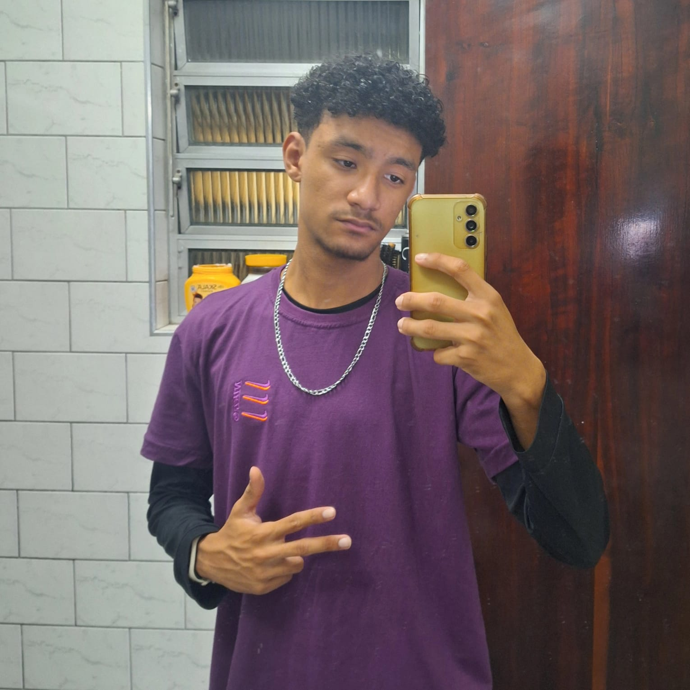
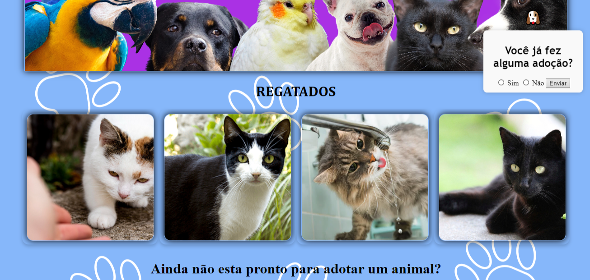
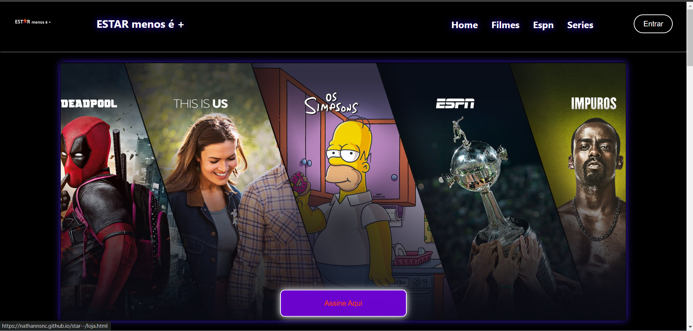
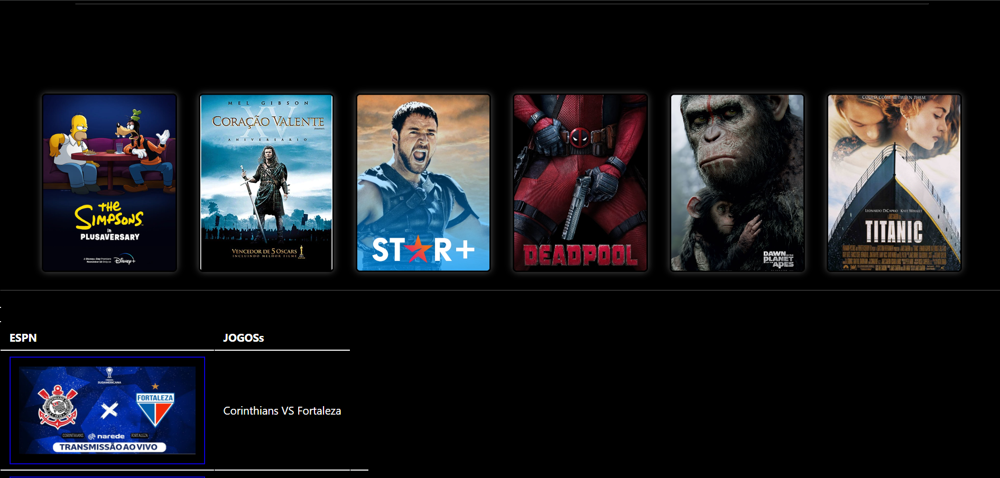

NYCOLAS NATHAN



Ola, Meu nome é Nycolas Nathan Da Silva, 17 anos, estudante de Desenvolvimento de Sistemas no SENAI e SESI. Desde pequeno, imaginei que a tecnologia poderia mudar o mundo e facilitar a vida das pessoas diariamente. Aqui estou eu nesse caminho de aprendizado e crescimento, buscando construir soluções inovadoras. Este portfólio existe como espaço onde divulgo um pouco do que venho construindo e das experiências que me levaram a evoluir como desenvolvedor. Que seja prazeroso para você conhecer mais sobre meu trabalho!
Habilidades
- Trabalho em equipe e Comunicação
- Aprendizado Rapido
- Flexivel
- Organização e Autodisciplina
Projetos
Ultimo Projeto : Site de ONG
ainda em desenvolvimento
Primeiro Projeto : Site Inpirado na StarPlus
https://nathannsnc.github.io/grupo-estar-menos-/pginicial
Primeiro Projeto : Site Inpirado na StarPlus
https://nathannsnc.github.io/grupo-estar-menos-/pginicial